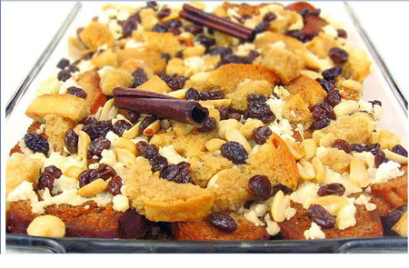

CAPIROTADA
PROCEDIMIENTO
MIEL DE PILONCILLO:
Hervir el agua con el piloncillo, anís, clavo, canela y cascara de limón hasta que reduzca la miel a la mitad.
PRESENTAR:
1.-En un molde colocar una capa de pan dorado, queso, pasas y miel de piloncillo, continuando de esta forma hasta terminar con la miel de piloncillo.
2.-Hornea a 150º C durante 25 minutos próximamente
3.-Agregar a la miel de piloncillo, rebanadas de plátano macho frito como se acostumbra en algunas partes de Nayarit.

| CANTIDAD |
INGREDIENTES |
| 1 PZA |
PILONCILLO |
| 5 G |
SEMILLAS DE ANIS |
| 1 RAJA |
CANELA |
| 2 PZAS |
LIMON |
| 5 G |
CLAVO |
|
PARA PRESENTAR |
| 4 PZAS |
BOLILLOS |
| 150 G |
QUESO COTIJA |
| 150 G |
PASAS |
| 1 PZA |
PLATANO MACHO |
| 1 LATA |
LECHE CONDENSADA |